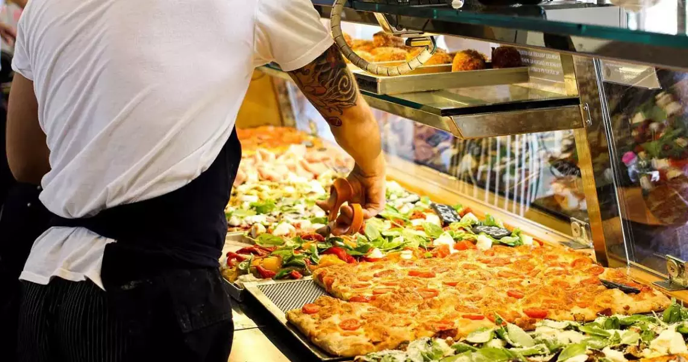

La nostra selezione di ristoranti

Benvenuti a Roma, la città eterna, famosa per la sua storia millenaria e la cucina deliziosa. Se sei alla ricerca di una guida
ai migliori ristoranti di Roma, sei nel posto giusto. Nella Capitale italiana, troverai una vasta gamma di opzioni culinarie
che spaziano dalle tradizionali trattorie ai ristoranti gourmet, dai mercati di strada alle pizzerie, soddisfando tutti i gusti e le esigenze.
Che tu sia un appassionato di cucina italiana classica, un amante della pizza autentica o alla ricerca di esperienze gastronomiche uniche,
qui troverai una selezione di ristoranti eccezionali dove potrai gustare alcune delle migliori prelibatezze della cucina romana e internazionale.
Siamo pronti a condurti in un viaggio culinario attraverso le vie di Roma, in modo che tu possa scoprire i luoghi migliori in cui deliziare il
tuo palato. Buon appetito!
Osteria da Fortunata: la cucina romana tradizionale nel cuore di Roma
Osteria da Fortunata è un ristorante di cucina romana tradizionale situato nel centro storico di Roma. Il ristorante è stato fondato
nel 1960 da Fortunata e suo marito, e da allora è stato gestito dalla famiglia.
Il menu di Osteria da Fortunata è composto da piatti classici della cucina romana, come pasta fatta a mano, gricia, carbonara, saltimbocca
alla romana e coda alla vaccinara. I prodotti utilizzati sono di alta qualità e provenienti da fornitori locali.
Osteria da Fortunata ha tre sedi nel centro storico di Roma:
Osteria da Fortunata - Pellegrino è la sede storica del ristorante, situata nel quartiere di Parione. Il locale è piccolo e accogliente,
con un arredamento semplice e rustico.
Osteria da Fortunata - Rinascimento è situata nel quartiere del Rinascimento. Il locale è più grande della sede di via del Pellegrino, e ha un'atmosfera più informale.
Osteria da Fortunata - Cancelleria è situata nel quartiere di Campo de' Fiori. Il locale è elegante e raffinato, e ha una terrazza
panoramica che offre una vista sulla piazza.
Tonnarello
Tonnarello è un ristorante di cucina romana situato nel quartiere di Trastevere a Roma una delle zone più vivaci e affascinanti della città.
Il ristorante è stato fondato nel 1973 da Giuseppe Tonnarello, e da allora è stato gestito dalla famiglia. Offre piatti classici della cucina
romana, come pasta, polpette e altri piatti semplici.
Le parole d'ordine per il servizio e l'atmosfera di Tonnarello sono cordiale e informale. Il personale è sempre disponibile a consigliare i clienti
sui piatti e sulle bevande. Il locale è arredato in modo semplice e rustico, con un tocco di eleganza.
Tonnarello è un'ottima scelta per chi cerca un ristorante dove gustare la cucina romana informale in un ambiente accogliente. Il ristorante ha ricevuto
buone recensioni da parte dei clienti, che lo hanno elogiato per la cucina, il servizio e l'atmosfera.

Sora Lella
Sora Lella è una trattoria tradizionale romana situata sull'Isola Tiberina, nel centro storico di Roma. Il ristorante è stato
fondato nel 1959 da Anna Maria Mangano, detta Sora Lella, sorella del famoso attore Aldo Fabrizi. Famosa per la sua cucina romana autentica,
preparata con ingredienti freschi e di stagione. Il menu comprende piatti classici come la gricia, la carbonara, il saltimbocca alla romana e
la coda alla vaccinara, tutti i piatti sono preparati con ingredienti freschi e di stagione, e la qualità è sempre alta. Il ristorante è un luogo
popolare tra i turisti e i romani, e spesso è necessario prenotare in anticipo. L'atmosfera è informale e accogliente, e il personale è cordiale e disponibile.
Polpetta
Polpetta è un ristorante di Roma che serve polpette in tutti i modi immaginabili. Il primo ristorante Polpetta è stato aperto nel 2013 a Trastevere, e da
allora sono stati aperti altri ristoranti in tutta la città. Fondato da un gruppo di amici che volevano creare un luogo dove poter gustare le polpette in modo
divertente e innovativo. Il nome del ristorante è un gioco di parole che combina le parole "polpetta" e "tutta".
Il menu di Polpetta è composto da una varietà di polpette, tra cui: polpette tradizionali, come polpette di carne, polpette di ricotta e polpette di melanzane e
polpette innovative, come polpette di pesce, polpette di verdure e polpette dolci.
Il ristorante Polpetta è un'ottima scelta per chi cerca un'esperienza culinaria divertente e innovativa. Il ristorante è un luogo popolare tra i turisti e i romani,
e merita una visita se siete alla ricerca di un'esperienza culinaria diversa.
Carbonara
Carbonara a Campo de' Fiori a Roma è un ristorante specializzato nella preparazione della carbonara, un piatto di pasta tradizionale
della cucina romana. Il ristorante è situato in una posizione centrale, in Piazza Campo de' Fiori, una delle piazze più vivaci e frequentate di Roma.
È stato fondato nel 1970 da una famiglia di ristoratori romani che volevano creare un luogo dove poter gustare la carbonara in modo autentico.
Il ristorante ha subito guadagnato popolarità, e oggi è uno dei ristoranti più frequentati di Roma.
Movie Restaurant
Il Movie Restaurant a Roma è un ristorante a tema cinematografico situato in Via Jaspers 54, a Roma. Il menu del Movie Restaurant offre una varietà
di piatti italiani tradizionali, come pasta, pizza, carne e pesce. I piatti sono preparati con ingredienti freschi e di stagione e sono serviti con
un tocco di creatività.
Il Movie Restaurant è un luogo vivace e divertente. Il ristorante è arredato in modo da creare un'atmosfera cinematografica. Il personale è cordiale
e disponibile e si impegna a far sentire i clienti a proprio agio.
Pizzeria di Bonci: la pizza a taglio più famosa di Roma
La pizzeria di Bonci è una delle pizzerie più famose di Roma. È situata in Via Trionfale 32, ed è stata fondata nel 2003 da Gabriele Bonci,
un maestro pizzaiolo italiano. Dopo aver lavorato in diverse pizzerie a Roma, Gabriele Bonci ha deciso di aprire la sua pizzeria nel 2003.
La pizzeria di Bonci è rapidamente diventata una delle pizzerie più popolari di Roma, e ha vinto numerosi premi, tra cui il premio di
"Miglior pizzeria del mondo" nel 2016.
La pizzeria di Bonci è specializzata nella pizza a taglio. La pizza è preparata con ingredienti freschi e di stagione, e viene cotta in un forno
a legna. Il menu offre una varietà di pizze, tra cui pizze tradizionali, pizze innovative e pizze stagionali. La pizzeria di Bonci è un'ottima
scelta per chi cerca una pizza di alta qualità. Il ristorante è un luogo popolare tra i turisti e i romani, e merita una visita se siete alla
ricerca di una pizza autentica.

Alice Pizza: la catena di pizzerie napoletane che conquista Roma
Alice Pizza è una catena di pizzerie che serve pizza tradizionale napoletana. Il primo ristorante Alice Pizza è stato aperto nel 2008 a Roma,
e da allora sono stati aperti altri ristoranti in tutta la città. La pizza è cotta in forni a legna, che le conferiscono un sapore unico. Il menu
offre una varietà di pizze, tra cui pizze tradizionali, pizze innovative e pizze stagionali.
Alice Pizza è un luogo informale e accogliente. I ristoranti sono arredati in modo semplice e moderno. Alice Pizza è un'ottima scelta per chi cerca
una pizza di alta qualità a prezzi accessibili. I ristoranti sono un luogo popolare tra i turisti e i romani, e meritano una visita se siete alla
ricerca di una pizza autentica.
Bao Bao a Piazza Trilussa: un'esperienza culinaria cinese autentica
Il ristorante Bao Bao a Piazza Trilussa a Roma è un luogo dove gustare dim sum, un tipo di cibo cinese preparato con pasta ripiena.
Il ristorante offre una varietà di dim sum, tra cui baozi, dim sum al vapore, ravioli e fagottini. Il menu del ristorante Bao Bao offre una
varietà di dim sum, tra cui baozi, dim sum al vapore, ravioli e fagottini. I dim sum sono preparati con ingredienti freschi e di stagione, e
sono serviti con una varietà di salse e condimenti.
Il ristorante Bao Bao è un'ottima scelta per chi cerca un'esperienza culinaria cinese autentica. Il ristorante è un luogo popolare tra i turisti e i romani, e
merita una visita se siete alla ricerca di un nuovo modo di gustare la cucina cinese.
Akira Ramen Bar: il paradiso del ramen a Roma
Akira Ramen Bar è un ristorante specializzato in ramen, una zuppa giapponese a base di brodo, noodles e vari condimenti. Il ristorante ha due sedi a Roma, una in
Via Ostiense e una in Via in Arcione. Il menu di Akira Ramen Bar offre una varietà di ramen, tra cui ramen classico, ramen piccante, ramen vegetariano e
ramen di stagione. I ramen sono preparati con ingredienti freschi e di alta qualità, e sono serviti con una varietà di condimenti, tra cui salsa di soia,
peperoncino, coriandolo e germogli di bambù.
Akira Ramen Bar è un'ottima scelta per chi cerca un'esperienza culinaria giapponese autentica. Il ristorante è un luogo popolare tra i turisti e i romani, e
merita una visita se siete alla ricerca di un buon ramen.
Chopstick a Roma: un'esperienza culinaria asiatica fusion unica
Chopstick è una catena di ristoranti che serve cucina asiatica fusion, tra cui sushi, sashimi, tempura, ramen e altro ancora. Il ristorante
ha quattro sedi a Roma, una in via dei Gracchi 128, una in Via Cassia 844, una in Via Portuense 76 e una in Via Regina Margherita.
Chopstick offre un'esperienza culinaria unica, che combina elementi della cucina asiatica tradizionale con influenze fusion. Il menu offre una varietà di
piatti, tra cui sushi, sashimi, tempura, ramen e altro ancora. I piatti sono preparati con ingredienti freschi e di alta qualità, e sono serviti in un
ambiente moderno e accogliente.
Chopstick è un'ottima scelta per chi cerca un'esperienza culinaria fusion asiatica all'insegna della freschezza e della qualità. Il ristorante è un luogo popolare
tra i turisti e i romani, e merita una visita se siete alla ricerca di un nuovo modo di gustare la cucina asiatica.